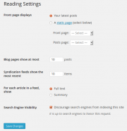

Creating a Static Front Page
Languages: English • 日本語 • Português do Brasil • (Add your language)
Contents[hide] |
By default, WordPress shows your most recent posts in reverse chronological order on the front page of your site. Many WordPress users want a static front page or splash page as the front page instead. This "static front page" look is common for users desiring static or welcoming information on the front page of the site.
The look and feel of the front page of the site is based upon the choices of the user combined with the features and options of the WordPress Theme.
There are four models for WordPress layout and structure, three that include static front pages.
- Blog: This is the traditional front page format with posts featured in reverse chronological order.
- Static Front Page: This is a traditional static HTML site model with a fixed front page and content placed in Pages, rarely if ever using posts, categories, or tags.
- Static Front Page Plus Blog: This model features a static front page as an introduction or welcome plus a blog to manage posts. Pages may be used to provide timeless content such as Contact, About, etc.
- Dynamic Front Page: Sometimes called the integrated model, the dynamic site design features a static front page plus blog, however the front page is dynamic. It may feature a combination of static and blog content (Page and posts). The Twenty-Eleven WordPress Theme offers that feature as an example with their Showcase Page Template. It features the most recent post in full or excerpt followed by the next most recent posts as post titles. There is an option to add a slider for featured posts set as Sticky Posts above the first post, creating a dynamic mix of content on the front page.
No matter which layout structure you choose, the process of setting up the static front page in WordPress is basically the same.
WordPress Static Front Page Process
There are two steps critical to creating a static front page on your site with WordPress.

The Page assigned as the front page of the site will display the static information you wish readers to know. It may be customized to direct people to welcome or offer instructions, featured content, highlight specific posts, articles, categories, or contributors.
The Page assigned as the blog page (posts page) of the site displays posts in reverse chronological order. Posts set as Sticky Posts will stick to the top of the queue, and navigation and organization of post content is through categories and tags.
Creating a Static Front Page
Creating a virtual static front page does not require editing or coding of files or templates. Using the default configuration for a "static front page" in WordPress does not remove the sidebar or change the look of the entire site, just the content area.
Please note that the names for the Pages used in these examples are web standardized names. You may choose alternative titles.
To create the static front page, go to the WordPress Administration Panels.
- Create a Front Page: In Pages choose Add New Page.
- Title it "Home".
- If the WordPress Theme offers an option to change the look and feel of the front page, select the Template in the Page Attributes panel box.
- Add content you would like to see within the content area of the static front page, or leave it blank if it is a Dynamic front page.
- Publish the Page.
- Title it "Home".
- Create a Blog Page: If choosing to add a blog, choose Add New Page again.
- Title it "Blog," "News," "Articles," or an appropriate name.
- Do not use a custom Page template for this page. The template files home.php or index.php will be used to generate this page in the Theme.
- DO NOT add content. Leave it blank. Any content here will be ignored -- only the Title is used.
- Publish the Page.Reading panel

- Title it "Blog," "News," "Articles," or an appropriate name.
- Go to Administration > Settings > Reading panel.
- Set Front page displays to a static page
- In the drop down menu for Front Page select "Home."
- In the drop down menu for Posts page select "Blog" or the name you created, or leave it blank if you will not feature posts on the site.
- Save changes.
- Set Front page displays to a static page
{kind=link}
While we are calling this a "static front page," you may edit the content on that web page at any time by editing the "Home" Page.
Theme Development for Custom Front Page Templates
Theme Template Files
Developing Theme template files that incorporate the static front page feature requires understanding of the WordPress Template Hierarchy.
On the site front page, WordPress will always use the front-page.php template file, if it exists. If front-page.php does not exist, WordPress will determine which template file to use, depending on the user configuration of 'Settings > Reading ->Front page displays', as follows:
- A static page: WordPress uses the Static Page template hierarchy: Custom Page Template, page-{id}.php, page-{slug}.php, page.php, index.php
- Your latest posts: WordPress uses the Blog Posts Index template hierarchy: home.php, index.php
Custom Site Front Page Template
To create a custom site front page template, include either of the following in the Theme:
- front-page.php
- A Custom Page Template (e.g. template-featured.php for featured content)
Custom Blog Posts Index Page Template
To create a custom blog posts index template, include the following in the Theme:
- home.php
Use only the home.php template file for the blog posts index. Do not use a Custom Page Template (such as template-blog.php) for two reasons:
- When the static front page feature is configured properly, WordPress will not use a Custom Page Template to display the blog posts index, even if a Custom Page Template is assigned to the page designated as the "Posts page". WordPress will only use either home.php or index.php.
- When the Custom Page Template is assigned to a static page other than the one designated as the "Posts page," the blog posts index loop pagination will not work properly.
Contextual Conditional Tags
- is_front_page()
- This Conditional Tag checks if the site front page is being displayed. Returns true when the site front page is being displayed, regardless of whether 'Settings > Reading ->Front page displays' is set to "Your latest posts" or "A static page".
- is_home()
- This Conditional Tag checks if the blog posts index is being displayed. Returns true when the blog posts index is being displayed: when the site front page is being displayed and 'Settings > Reading ->Front page displays' is set to "Your latest posts", or when 'Settings > Reading ->Front page displays' is set to "A static page" and the "Posts Page" value is the current Page being displayed.
When the site front page is being displayed and 'Settings > Reading ->Front page displays' is set to "Your latest posts", both is_front_page() and is_home() will return true.
Configuration of front-page.php
If it exists, the front-page.php template file is used on the site's front page regardless of whether 'Settings > Reading ->Front page displays' is set to "A static page" or "Your latest posts," the Theme will need to account for both options, so that the site front page will display either a static page or the blog posts index. There are a few methods to do so.
Conditional display within front-page.php
One way to allow front-page.php to account for both options for 'Settings > Reading ->Front page displays' is to add a conditional inside of front-page.php itself, using get_option( 'show_on_front' ), get_home_template(), and get_page_template().
Method 1: including custom content directly within front-page.php:
if ( 'posts' == get_option( 'show_on_front' ) ) {
include( get_home_template() );
} else {
// Custom content markup goes here
}
Method 2: including any page template:
if ( 'posts' == get_option( 'show_on_front' ) ) {
include( get_home_template() );
} else {
include( get_page_template() );
}
Filtering frontpage_template
Another way to allow the site front page to display either a static page/custom content or the blog posts index, without adding conditional code within front-page.php, is to filter frontpage_template, by adding a filter callback to functions.php:
function themeslug_filter_front_page_template( $template ) {
return is_home() ? '' : $template;
}
add_filter( 'frontpage_template', 'themeslug_filter_front_page_template' );
This method causes WordPress to bypass the front-page.php template file altogether when the blog posts index is being displayed.
Adding custom query loops to front-page.php
If the front-page.php template file includes a default WordPress Loop, like so:
<?php
if ( have_posts() ) : while ( have_posts() ) : the_post();
// do something
endwhile; else:
// no posts found
endif;
That loop applies to the post content of the static page assigned to 'Settings > Reading ->Posts page'.
To display custom loops (latest blog posts, custom/featured content, etc.), add secondary loop queries using calls to WP_Query. For example, to show the 3 latest blog posts:
$latest_blog_posts = new WP_Query( array( 'posts_per_page' => 3 ) );
if ( $latest_blog_posts->have_posts() ) : while ( $latest_blog_posts->have_posts() ) : $latest_blog_posts->the_post();
// Loop output goes here
endwhile; endif;
Pagination
Static front pages are not intended to be paged. None of the WordPress Previous / Next page link functions work with a static front page. Pagination on a static front page uses the page query variable, not the paged variable. See the WP_Query for details.